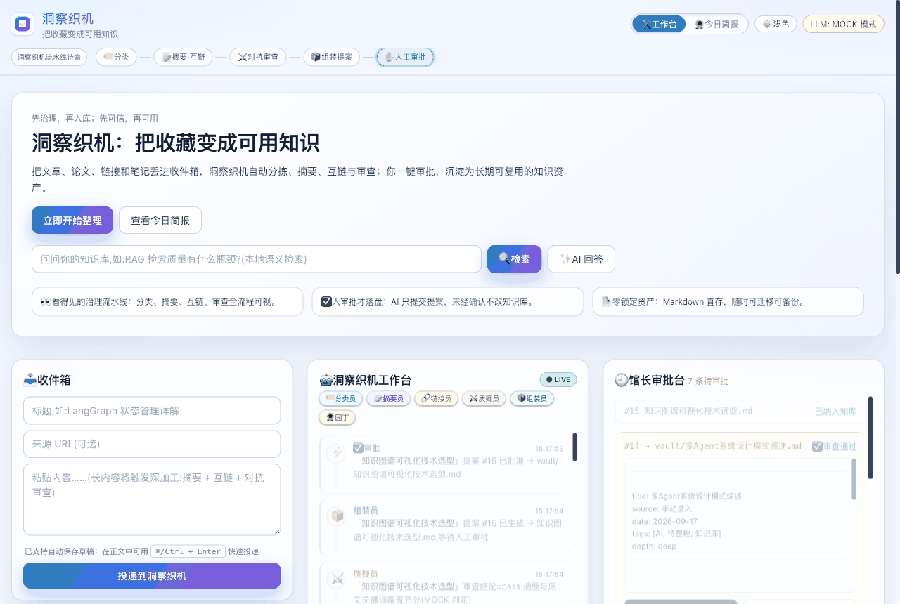

自托管 · 开源 · 数据永远是你的
把收藏编织成
可行动的洞察
文章、论文、链接丢进收件箱,一队看得见的 Agent 替你分拣、摘要、互链、对抗审查; 你一键审批,沉淀为 Markdown 知识资产——本地语义检索,随问随答,带引用。
👀 流水线可见
五个 Agent 实时处理,每一步都看得见
五个 Agent 实时处理,每一步都看得见
⚔️ 对抗审查
质疑员红队检查,过度概括无处遁形
质疑员红队检查,过度概括无处遁形
✅ 人审批落盘
AI 只提提案,不批不写一个字节
AI 只提提案,不批不写一个字节
📄 零锁定
纯 Markdown,Obsidian 直接打开
纯 Markdown,Obsidian 直接打开
30 秒看懂
语义检索 → RAG 问答 → 投递 → Agent 流水线 → 审批入库 → 自动进入可检索索引

五层架构
知识的"进、治、存、查、用"全闭环
采集📥 收件箱🔌 API浏览器插件 🔜TG bot 🔜
治理🏷️ 分类📝 摘要 ∥ 🔗 互链⚔️ 对抗审查✋ 人工审批🌻 园丁巡库
存储📄 Markdown + [[双链]]Obsidian 兼容
检索🔍 本地语义检索(小节级)✨ RAG 问答带引用
界面🛠 工作台🌻 每日简报🕸 知识图谱 🔜
三步跑起来
默认 MOCK 模式零配置;接真实模型只需一个环境变量
# 1. 克隆
git clone https://github.com/kittimzhe/insightloom.git && cd insightloom
# 2. 一键起(内置 MOCK 模式,无需任何 Key)
docker compose up -d
# 3. 打开工作台
open http://127.0.0.1:8300 # 投递 → 审批 → 检索,全流程可用
# 想接真实 LLM(DeepSeek/OpenAI 兼容/Ollama)?
echo "CURATOR_LLM_API_KEY=sk-xxx" >> .env && docker compose up -d
git clone https://github.com/kittimzhe/insightloom.git && cd insightloom
# 2. 一键起(内置 MOCK 模式,无需任何 Key)
docker compose up -d
# 3. 打开工作台
open http://127.0.0.1:8300 # 投递 → 审批 → 检索,全流程可用
# 想接真实 LLM(DeepSeek/OpenAI 兼容/Ollama)?
echo "CURATOR_LLM_API_KEY=sk-xxx" >> .env && docker compose up -d
和现有工具的差异
不是"再一个笔记工具",而是"知识入库前的治理系统"
| 维度 | 笔记工具 | RAG/检索工具 | 洞察织机 |
|---|---|---|---|
| 入库前治理 | ✗ | ✗ | ✓ 5-Agent 流水线 |
| 过程可见 | ✗ | ✗ | ✓ 实时事件流 |
| 人审落盘 | ✗ | ✗ | ✓ 审批闸门 |
| 零锁定 | 部分 | 部分 | ✓ 纯 Markdown |
| 质量闭环 | ✗ | ✗ | ✓ 对抗审查 + 巡库 |